The recipe of this dish is pretty simple and making it at home is actually not difficult .
A basic white sauce is made , flavored with some seasoning , and mixed with pre cooked pasta .
One can load it with veggies , a great way to make kids eat their veggies .
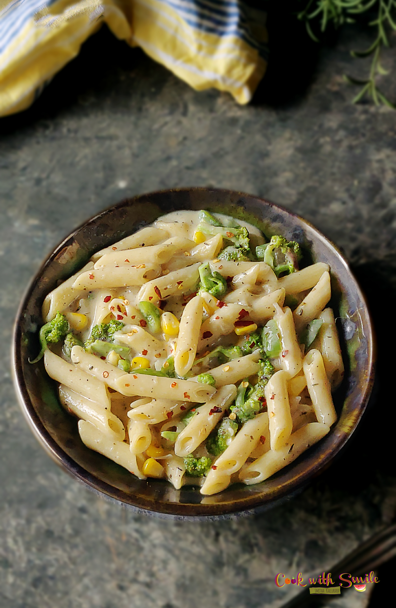
White Sauce Pasta Recipe with step by step Photos
Cook Pasta
In a large pan take 4 cups of water .
Add little salt and a tsp of oil . Allow water to boil .
When it boils .. add 1 cup pasta into the boiling water.
After 6-7 mins .. pasta would have cooked . Check . take care not to over cook .
It should be al dente ( Cooked just enough to retain the shape ) .
Drain and retain the stock water . Refresh the cooked pasta with running water .
avoids over cooking of pasta due to the heat .
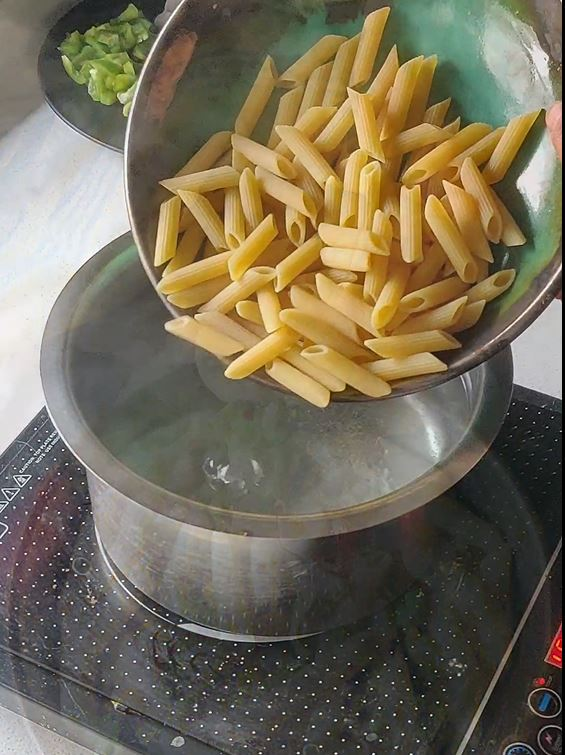
Saute veggies
Take a pan . Add tsp of butter . Add finely chopped 5-6 flakes garlic . Saute a minute .
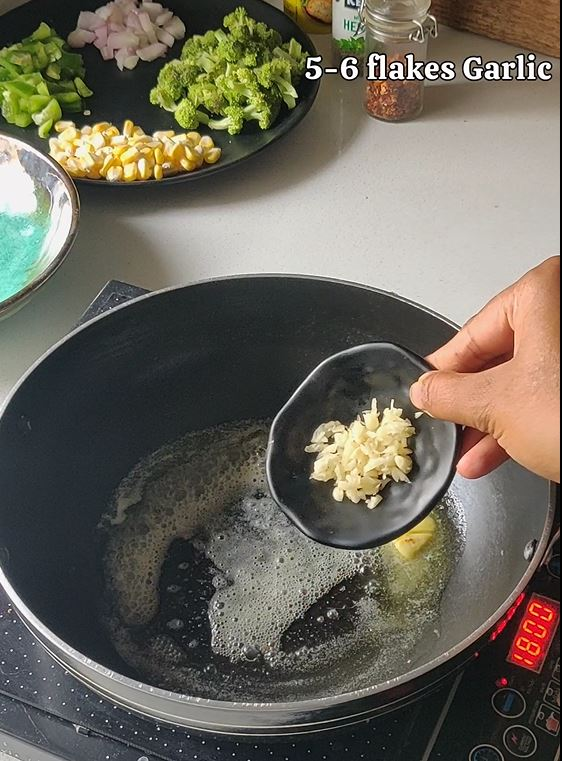
Add Onion and all the chopped veggies 1-1 to the hot pan … You can use choice of your veggies .
Here i have added brocolli , corn and capsicum . Saute for 2-3 mins.
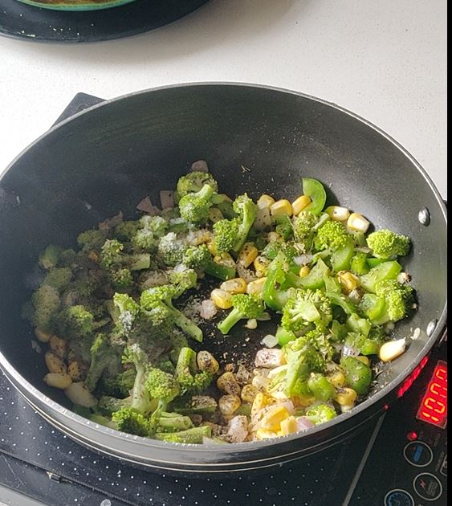
Add little salt, pepper powder ,little herbs / oregano , fry for a minute. Don’t over cook the veggies ..
retain their color and crunchiness . They taste and look best that way . Transfer to a plate and keep aside .
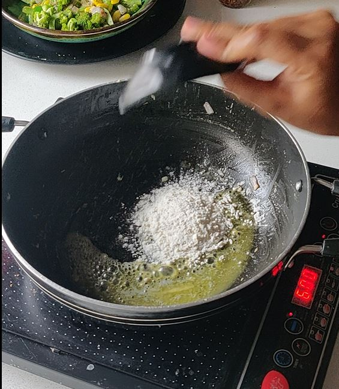
How to make White sauce
To the same pan add tsp of butter . Add 2 tbsp maida
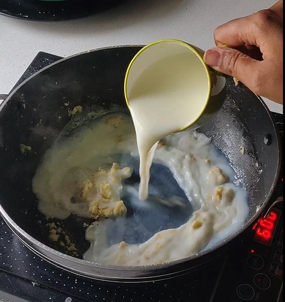
Keep the flame low and roast till golden brown. Take care not to burn .
Next to the sauted flour .. add milk at room temperature . Add slowly in steps and mix well . I have used 1.5 cup milk.
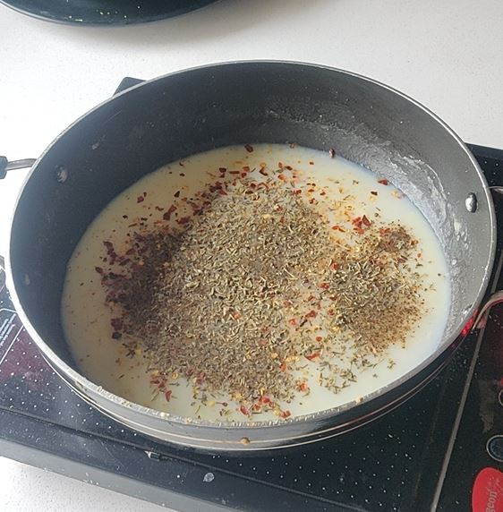
Keep stirring and break the lumps . Make sure that there are no lumps. You may use a whisk to mix Bring the milk to boil .
When its boiling .. simmer and add around 1/2 cup pasta waster , 2 cheese cubes , salt , tsp red chilli flakes ,
pepper powder , garlic powder and oregano powder . Mix everything well . Bring to boil . .Keep the consistency of
sauce thin only , later it will thicken as it cools .
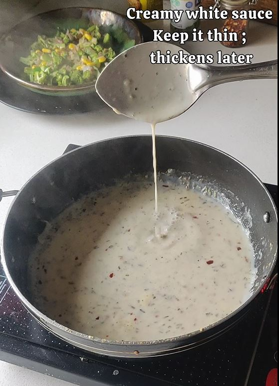
Our creamy white sauce for the pasta is ready .Time to bring everything together
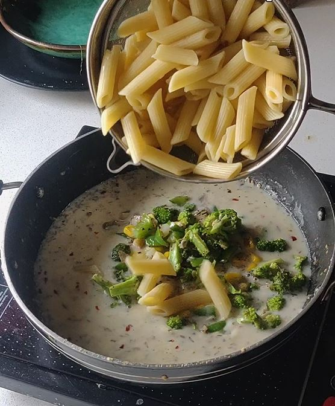
Time to assemble and make White Pasta
To the ready white sauce … add the sauted veggies and cooked pasta . Combine everything .
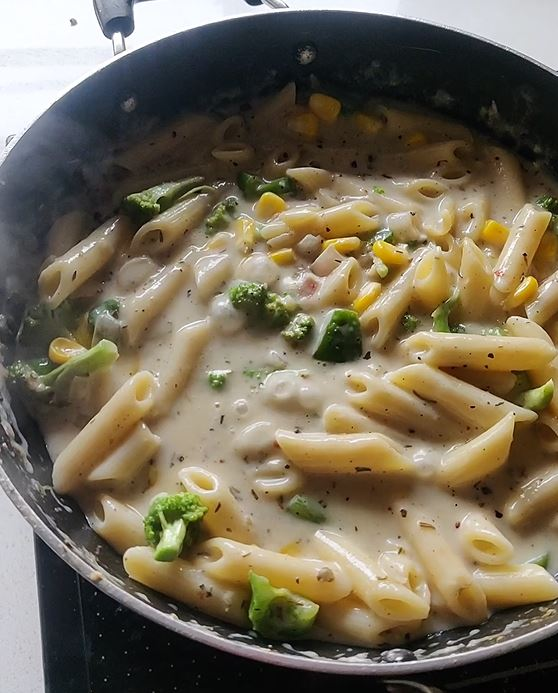
Simmer and cook for 2-3 mins , allow pasta to take in flavors .
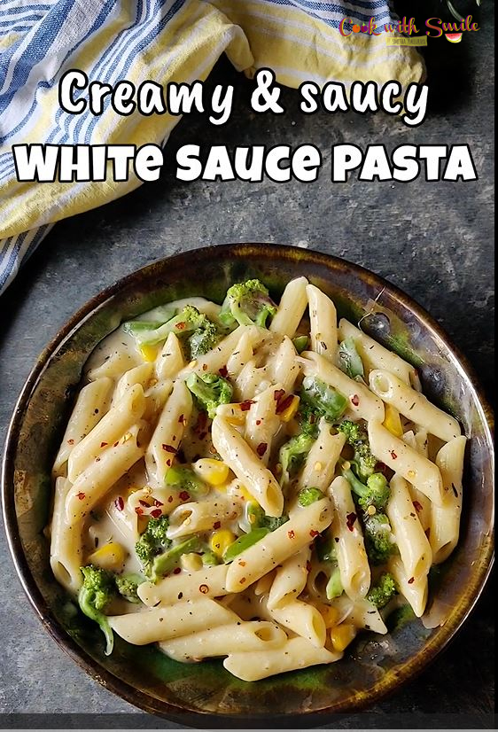
Transfer it to the serving plate and garnish with some grated cheese if you want to make it more cheesy .
White sauce pasta is ready to serve . Relish white sauce pasta hot .
Points to Note
You can use any type of pasta like fusilli , penne , macroni etc . But which ever you use .. please make sure it’s cooked al dente . Else we will end up with mushy over cooked pasta and will not taste good . I have used here Penne .
Retain a portion of cooked pasta water to make sauce .
You can use any veggies of your choice like brocolli , corn , carrot , peas etc .
To make it more healthy .. now a days people you can replace all purpose flour in
the white sauce with wheat flour / oats flours.
The important step while making white sauce is whisking when you add in the milk . Make sure milk is at room temperature and
add milk in steps , continuously stirring and incorporating flour with milk . Whisk continuously until all the flour and milk is
mixed well together. Make sure there are no lump . You can use a whisk too
Keep the consistency of the sauce thin . White sauce gets thickened as it cools . So its better to serve them hot and fresh . However if you are planning to serve later .. its better to make them little thin consistency .. that way as it cools .. it will thick and will be perfect when u are serving.
Addition of veggies , cheese and herbs is as per your taste
Leave a Reply
Recipe Rating